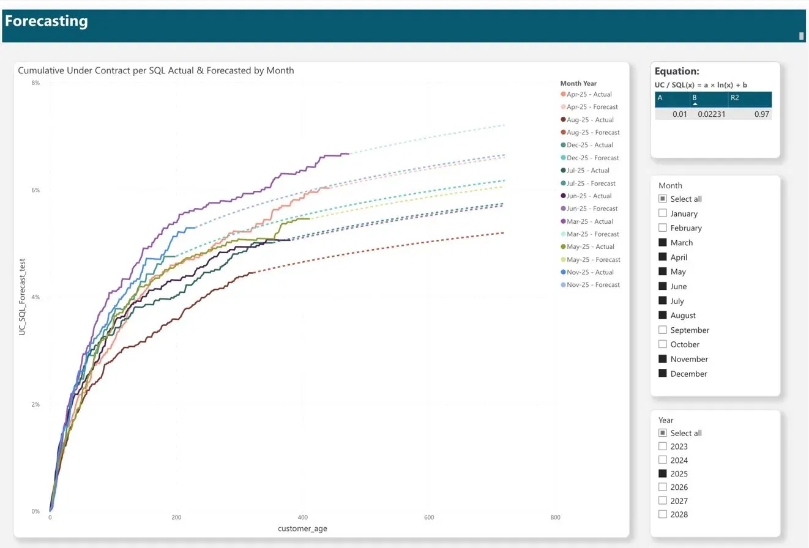

Grace Harrill · Seattle, WA
Combining advanced geospatial expertise with data science principles, I hold an M.S. in GIS focused on Geospatial Intelligence and a B.A. in GIS with a Minor in Data Science
Reporting Analyst at VOGLIO Digital Marketing —
I turn complex location and marketing data into tools and insights that drive real decisions.
Most tools focus only on burned area. This study used atmospheric transport modeling to quantify smoke exposure for every census tract in Washington (2020–2024). Revealed communities facing disproportionate risk far from fire perimeters. Built in ArcGIS Experience Builder with interactive filters and risk dashboards.
Designed and built a logarithmic forecasting model in Power BI to predict long-term conversion rates for customer cohorts at varying lifecycle stages. The model fits a curve of the form UC/SQL(x) = a · ln(x) + b (R² = 0.97) to historical cohort data, then dynamically anchors projections to a 200-day performance benchmark — preventing early-stage noise from distorting forecasts. A year-over-year growth factor is applied to future cohorts to reflect efficiency gains over time. All client data fully anonymized.

Built an end-to-end spatial analytics pipeline combining ArcGIS and Power BI to map customer locations relative to clinic sites across multiple states. Used the Haversine formula in DAX to calculate driving distances between customer zip codes and clinic coordinates, identifying the nearest clinic for each customer. Layered in ArcGIS drive-distance analysis to define 5-mile service zones and visualize customer density within each catchment area. Outputs included interactive maps, bubble charts, heat maps, and a distance table — used to optimize geographic ad targeting. All client data fully anonymized.
Created automated SQL validation framework comparing Google Sheets categorization system against production Redshift tables (GSC + GA). Flagged discrepancies in category counts, tag values, and landing page totals before they reached client dashboards. Saved hours of manual QA weekly.
-- Validate category value counts match between -- Google Sheet source and production table SELECT category_name, category_value, COUNT(*) AS prod_count FROM gsc.dim_categories GROUP BY category_name, category_value -- Cross-check against reference table SELECT a.category_name, a.prod_count, b.ref_count, a.prod_count - b.ref_count AS delta FROM prod_counts a LEFT JOIN ref_counts b ON a.category_name = b.category_name WHERE a.prod_count != b.ref_count
Multi-method analysis of 6 years of SPD data using Getis-Ord Gi*, Space-Time Cube, network KDE, and GWR. Found renter concentration was the strongest predictor (GWR R² ≈ 0.27). Only 2% of bins drove disproportionate crime. Automated preprocessing with ArcPy.
-- ArcPy workflow — split incidents into annual feature classes import arcpy -- Define year range years = range(2019, 2025) -- Loop through each year and run analysis for yr in years: arcpy.analysis.Select( "spd_pts_spn", f"spd_pts_{yr}", f"Year = {yr}" ) arcpy.analysis.SummarizeWithin( "king_county_bg", f"spd_pts_{yr}", f"bg_{yr}_counts" ) -- Hotspot analysis (Getis-Ord Gi*) arcpy.stats.HotSpots( f"bg_{yr}_counts", "Join_Count", f"hotspots_bg_{yr}", "K_NEAREST_NEIGHBORS", number_of_neighbors=8 )
Built for Data Science for Sustainable Development (Chicago), this interactive ArcGIS Online database supports peacebuilding and humanitarian fieldwork. Combined Survey 123 data collection, ArcGIS mapping, and Excel data pipelines to create an accessible geospatial resource for global teams.
I bridge spatial thinking and business intelligence. I specialize in turning complex datasets into clear, actionable insights through dashboards, visualizations, and reporting.
MS Geographic Information Systems
University of Idaho — GPA 4.0 (May 2026)
BA GIS, Minor Data Science
University of Washington — GPA 3.7 (June 2024)
Open to work across GIS analysis, spatial data science, geospatial intelligence, BI reporting, and data‑driven operations.